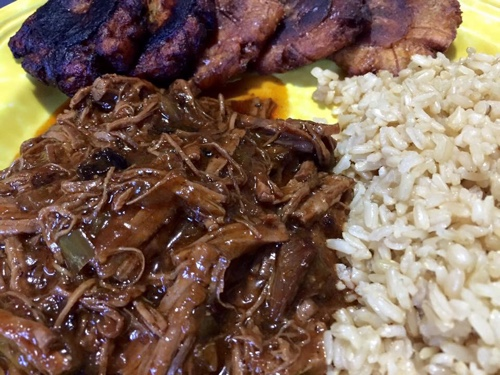

Ropa Vieja

Description
Ropa vieja means “old clothes” in Spanish. It’s probably named this way
because the meat is shredded so it ends up looking like rags. Serve it
with a side of white rice and some plantains (tostones or maduros) and it
makes am excellent and filling dish.
Ingredients
- 2 tablespoons Extra Virgin Olive Oil
-
2 1/2 pounds flank steak (or any other marbled cut of beef like chuck),
cut in 3-inch x 4-inch pieces
- Goya Adobo with Pepper, to taste
- 2 large yellow onions, finely chopped
- 1 1/2 green bell peppers, finely chopped
- 1 (6 ounce) jar Goya Sofrito
- 3 teaspoons minced garlic
- 1 (8 ounce) can tomato sauce
- 1 packet Sazon Goya with Coriander and Annatto
- 1 packet beef bouillon
- 1/4 teaspoon black pepper
- 1 cup Spanish olives stuffed with minced pimientos, sliced
- 1 tablespoon chopped fresh cilantro (optional)
- 2 cups cooked long grain rice
Directions
- Heat oil in large heavy-bottomed pot over medium-high heat.
- Season meat with adobo.
-
Add steak to pot and cook in batches, flipping once, until well browned,
about 10 minutes.
- Transfer meat to a plate.
- Lower heat to medium.
-
Stir in onions and peppers. Cook, stirring occasionally, until
vegetables are soft, about 10 minutes.
-
Add Sofrito and garlic to pot; cook until fragrant, about 1 minute.
-
Stir in 3 of cups water, tomato sauce, Sazón, beef bouillon and pepper.
- Bring mixture to a boil.
- Return beef to pot.
-
Lower heat to medium low and simmer, covered, stirring occasionally,
about 45 minutes.
- Stir in olives.
-
Cover pot; simmer until meat shreds easily with fork, 1 – 1½ hours,
adding more water in ¼ cup measurements, if pot becomes dry.
- Transfer meat to work surface; shred meat with two forks.
- Bring remaining sauce to a boil.
- Mix meat and cilantro (optional) into sauce.
- Serve with white rice.